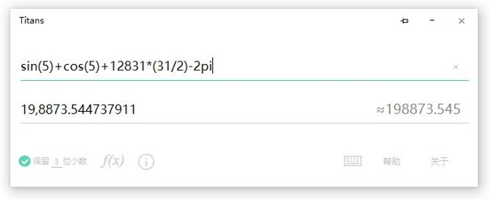

下载
这是一款强大的文本计算器，支持大多数函数运算，提供了诸多方便的功能。它可以输入一个算式，然后立即计算出结果。（Win8/10）
功能
Titans支持保留小数（最高9位），支持随机数，支持查看数字属性：整数、小数、正负、奇偶、自然数、平方数、立方数、质合数、完全数，以及转换进制、罗马数字（1~3999的整数），也可以转换为人民币大写。
当然，Titans也支持科学运算，如E+, E-, ^, abs, log, exp, tan, sin, cos, sgn, sqr, oct, int, fix, round, mod, and, or, xor, !, π, rd等。
几乎所有计算器都是很难识别的千位分隔符，而Titans却别出心裁地使用了万位分隔符。
除此之外，Titans还有更多实用的功能，在主界面右下角的“帮助”里即可查看。